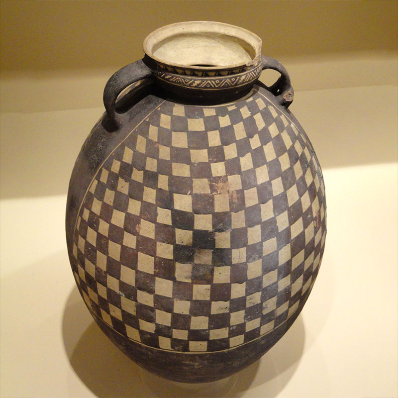
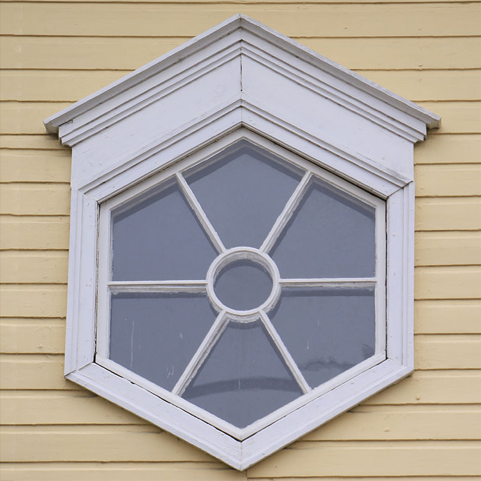
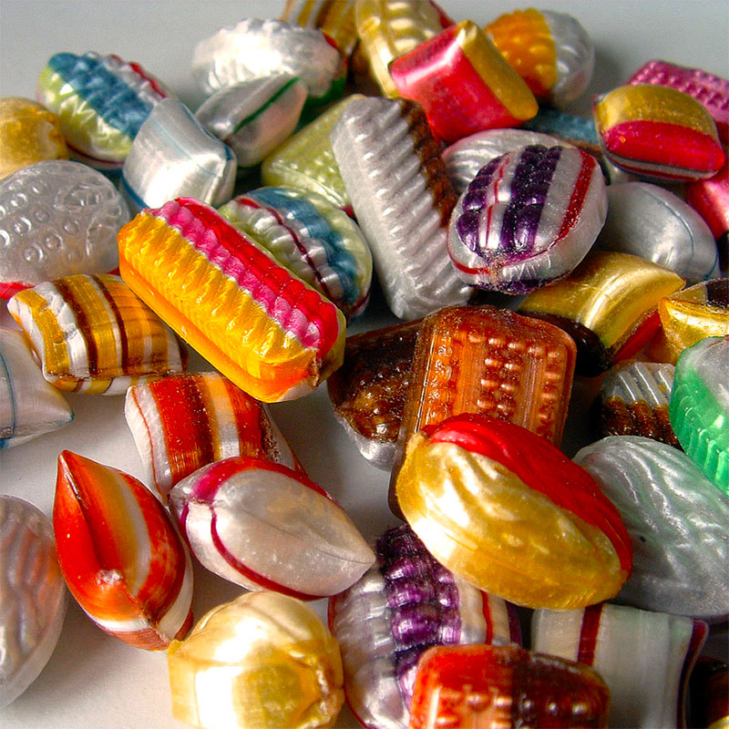

Números que representen algo.
Por ejemplo: Los números del reloj representan tiempo (horas, minutos).
El número más grande que encuentren.
Algo de la naturaleza con un forma muy geométrica.
Una flor, planta, fruta, vegetal, piedra, etc.
Una construcción muy geométrica.
Un edificio, escultura, puente, arco, portal, ventana u otra construcción humana.
Una obra de arte que use formas geométricas interesantes.

Un grupo con tantas cosas que no es posible contarlas.
Algo cuya forma no tenga curvas, solo superficies planas y bordes rectos.
Algo cuya forma solo tenga superficies curvadas.
Algo que imaginen que fue construído usando medidas muy precisas o cálculos muy complejos.
Círculos dentro de otros círculos.
Tantos cuadrados o rectángulos como quepan en la foto.
El polígono con la mayor cantidad de lados que puedan encontrar.
Un polígono es una figura plana y cerrada cuyos lados son todas líneas rectas.

Un círculo imperfecto.
Algo que sea casi perfectamente circular, pero no.
Un triángulo oculto.
Un triángulo formado por los bordes de cosas o en el espacio entre cosas que sea visible solo mirando desde una posición particular.
Un diseño hecho de figuras geométricas colocadas una junto a la otra, sin dejar espacios.
Por ejemplo mosaicos en el piso o pared.
Cosas o formas dispuestas en un diseño simétrico y colorido.
Como en un kaleidoscopio, una flor geométrica o las alas de una mariposa.
Un grupo de cosas cuyo color, tamaño o forma siga un patrón que se repite.
Un grupo de cosas similares que aparentemente estén desordenadas y no sigan ningún patrón.

Un grupo de cosas similares, ordenadas por tamaño.
Un objeto que sería un tobogán muy rápido y emocionante si pudieras reducir el tamaño de tu cuerpo.